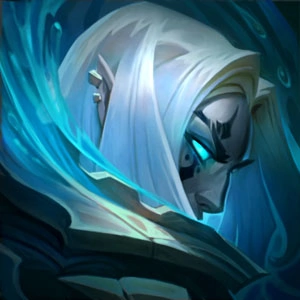

nabuna | Adrian M
Booster y coacher de League of Legends.
discord: nabuna#2981
WhatsApp: 633914772
telegram: @nabuna2981
Quien soy y mi experiencia
Mi nombre es nabuna (o Adrián M en algunos portales de anuncios). Actualmente soy un jugador Master que ha peakeado en Grandmaster (sobre 400 LP) en la season 11 y ha jugado contra los mejores jugadores del server de Europa de League of Legends, y lo aprovecho para ofrecer servicios relacionados con el elo de este videojuego; como boosting, coaching o venta de cuentas, entre otros. Soy main jungla por lo que los servicios relacionados con el rol serán los que más exito devolverán, pero también puedo ajustarme a otros roles, especialmente en elos bajos.
Llevo dedicándome a esto semi-profesionalmente durante varios años -desde finales de 2017-, lo que me ha llevado a trabajar con más de un centenar de clientes, y obtener la experiencia necesaria en el ámbito (del coaching, sobretodo) como para que, prácticamente, todos mis clientes estén satisfechos, y muchos de ellos vuelvan a contratar mis servicios.
En todo momento, procuro ser lo más cercano y profesional con el cliente: explicando los precios de una manera transparente, adecuarme a peticiones específicas de los clientes (como aparecer offline en la lista de amigos, jugar ciertos campeones o líneas, o jugar en determinados horarios), dar todas las facilidades posibles para que te sientas seguro al realizar los pagos, etc. Acepto Bizum, tranferencia o PayPal.
Aclaro aquí arriba que el coaching es la mejor opción para la mejora individual, y a la larga te llevará a los elos que tu quieras; es mi recomendación. Por supuesto el boosting es la mejor opción si buscas un ascenso de división rápido, también es muy útil para asegurar una buena posición tras las placements de tu cuenta main o de una cuenta fresh nivel 30. Escoge el servicio que más se ajuste a lo que quieras conseguir.
Boosting
Boostear ha sido mi actividad principal durante los últimos años, estoy seguro que llego a las 1000 horas trabajadas. Esto quiere decir que he trabajado en todos los elos, por lo que los conozco bien -que me ha sido muy útil para el coaching- y conozco qué estilo de juego o campeones son los mejores para cada elo. Consigo win-rates muy altos; por ejemplo, en la brecha de hierro 4 a platino 4, siempre gano el 90% de las partidas, y a veces el 100%.
Explico el proceso común de un boost:
- Tras el contacto, respondo de manera casi inmediata entre las 10 de la mañana y las 2 de la madrugada.
- Me explicas el pedido: elo actual, elo deseado y ganancia de puntos.
- Hago un precio a medida y te explico de donde viene cada euro. El precio no suele ser negociable, pero te ofreceré ofertas si compras de manera recurrente (probablemente al tercer pedido ya te ofrezca una). En este paso, también llegaremos a un acuerdo sobre como realizar el pago, aunque casi siempre se realizan entre 1 y 3 pagos: el primero antes de empezar, el segundo a la mitad del boost, y el tercero a pocas partidas de acabar el boost. De esta manera, ambos obtenemos una manera segura de completar en pedido sin demasiado riesgo a un posible timo por cualquiera de las 2 partes.
- Me proporcionas los credenciales de la cuenta y comienzo a jugar, informándote casi cada día (la frecuencia de las actualizaciones la decides tu, también puedes usar páginas como op.gg) de los avances de la cuenta. Sobre la seguridad de tu cuenta, y algún posible miedo a robo: es imposible robar una cuenta de League of Legends sin acceso, y mucho menos sin conocer, al correo vinculado. De esto te puedes informar para que veas que no hay ningún problema.
- Por último, te aviso que he terminado el boost y nos despedimos hasta la próxima!
Aclaración: nunca hablo en el chat, nunca spameo pings y me suelo conectar en offline a la cuenta (no apareces en la lista de amigos, se hace mediante el programa Deceive, y es totalmente legal y seguro).
Precios:
Influyen demasiados factores como para dar un precio fijo aquí, lo mejor es que me contactes para darte un precio a medida, explicando de donde sale cada euro. Aclaro desde ya que no trabajo por miserias y que los precios giran en torno a las horas trabajadas principalmente, procurando cobrar como mínimo 4€/hora, aumentando este precio a medida que la dificultad del pedido (elo) aumenta. Se intentará llegar a un acuerdo con el que ambos estemos conformes y se negociará si es necesario, pero no voy a boostear por 2 euros la hora, o menos, como hacía hace tiempo, creo que es comprensible. El calculo de las horas se hace únicamente tomando las victorias en cuenta, ya que perder lo considero mi culpa, y no pagarás tú por ello.
Coaching
Desde hace unos meses, procuro dedicarle al coaching el mayor tiempo posible. Es la actividad perfecta para un cliente que quiera mejorar, e intento ser lo más activo e informativo posible en cada sesión. Procuro adquirir una posición cercana y amable, tratando siempre bien al cliente y mostrando, únicamente, una mentalidad positiva y formadora, independientemente del nivel del cliente, por supuesto.
El enfoque de cada sesión se acordará entre el cliente y yo, a medida, pero por listar los métodos comunes:
- Me compartes la partida y doy algunas indicaciones mientras observo como juegas, para después comentar cosas más especificas y responder a tus preguntas.
- Te comparto una partida mientras la juego, explicando en cada momento los pensamientos que pasan sobre mi cabeza. Se aclaran dudas al terminar la partida y me explayo sobre lo ya explicado. Esta es la opción con la que mejores resultados he conseguido.
- Conversación sobre el videojuego, abarcando todos los campos que te interesen (como macro o micro), y especificando en los apartados necesarios (como el farmeo, control de oleadas, fase de lineas, match-ups)
El coaching es un método de aprendizaje que requiere de tiempo para que el jugador consiga aplicar los conocimientos aprendidos. Soy consciente de ello y por eso tengo planes de servicio de coaching, abarcando varias sesiones durante un tiempo (semanas o meses) por un precio ajustado al cliente, monotorizando tus partidas y haciendo apuntes incluso fuera de las sesiones mediante un mensaje. El objetivo es mantener una relación cercana y seria para lograr los objetivos, y daré lo máximo de mí para que sientas que no has malgastado el dinero.
Precios:
Una sesión común serán 20€, ésta suele ocupar una hora de tiempo, pero puede extenderse si mis explicaciones no han quedado claras.
Como ya he comentado, existen algunos planes:
- Triple sesión en un único día: 50€
- Cinco sesiones en días repartidos (con motorización de tus partidas a lo largo de los días y aclaraciones mediante mensajes): 90€
- Diez sesiones en días repartidos (ajustable hasta 45 días si lo crees conveniente, con motorización de tu progreso y recomendacines espontáneas): 170€
- También hago revisiones de op.gg por 10€, aconsejándote itemizaciones, campeones, y en general corregir algunos malos hábitos que se observan mirando un historial de partidas.
Venta de cuentas
También ofrezco este servicio. Esta es la lista de productos y sus precios:
- Cuentas fresh y unranked de nivel 30 con +50.000 BE: 10€ cada cuenta, leveleadas en Alemania y no en China, con garantía ante ban (que nunca pasa) y correo no verificado para que puedas poner el tuyo. Si quieres comprar varias cuentas, el precio disminuye considerablemente, con descuento ascendente hasta el 30% en un pedido de 10 cuentas.
- Cuentas específicas: después de tantos años boosteando, tengo varias cuentas en casi todos los elos, jugadas y subidas por mí mediante el duoq que he realizado con los clientes. Contáctame con la cuenta que buscas, y te ofreceré mi mejor opción, a un precio considerado.